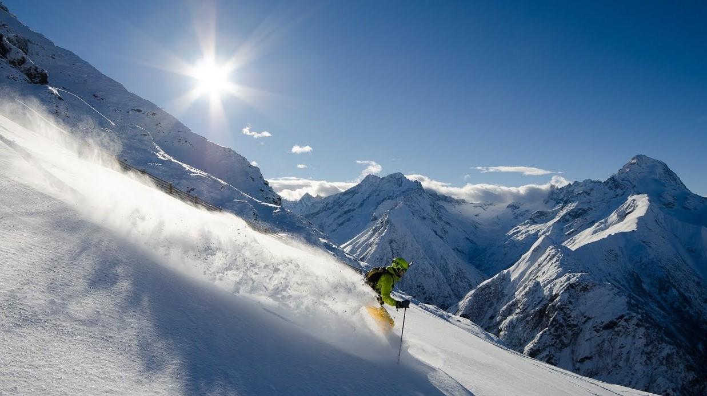
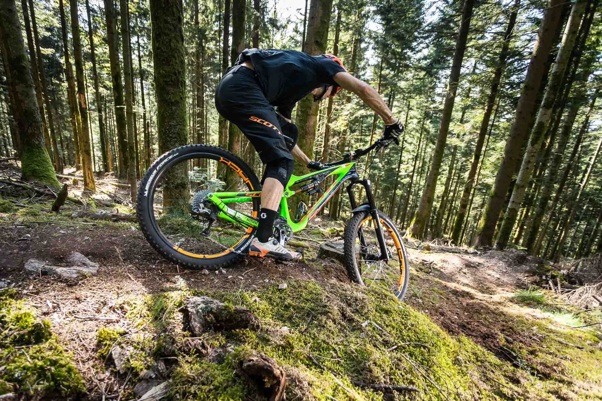
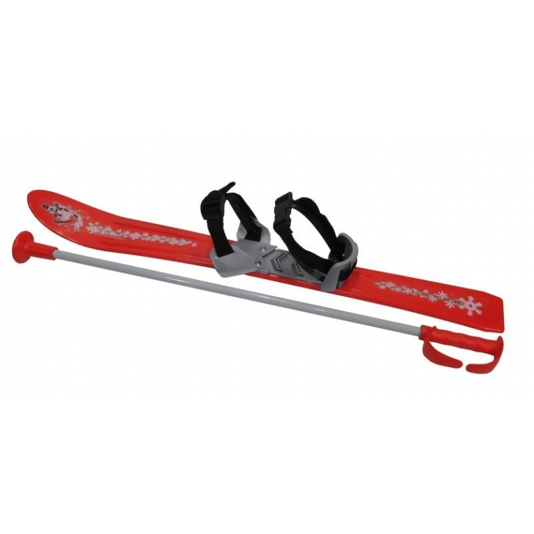
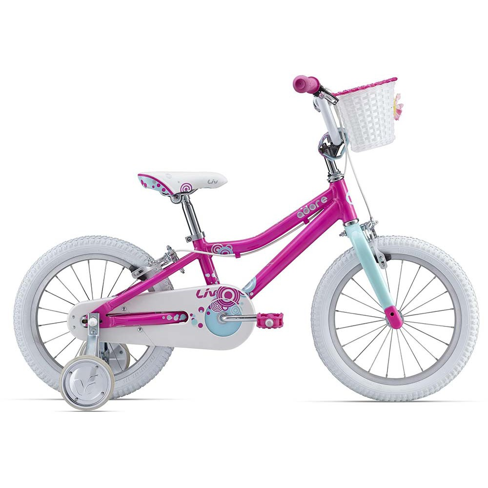

Je suis éleve au lycée international de Ferney Voltaire
en classe de Premiere générale 4.
Par la suite je souhaitte garder maths et NSI afin de me
permettre de me diriger vers des écoles supperieur amenant vers un
metier touchant à l'informatique.
Je pratique plusieurs sports en dehors du lycée dont
principalement le ski et le VTT:
un petit aperçu:
 Pour les personnes interessées par mon matériel:
 J'ai également une passion pour l'aéromodelisme,
surtout en fpv, je pilote des drones de course.

Ma propre manière de dire bonjour aux adversaires:
Lien projet
Lien rapport